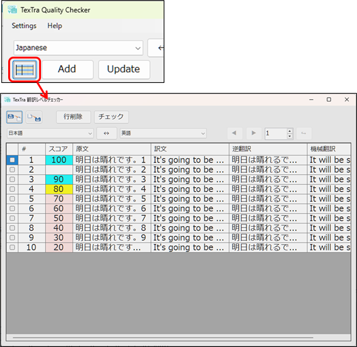
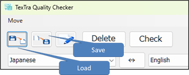
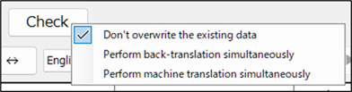
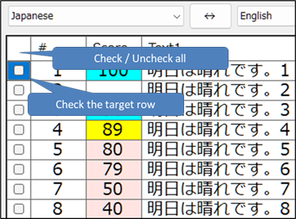
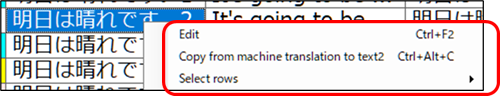

Bilingual list form
You can perform a quality check on multiple
bilingual entries.


・ Save
button
Exports the bilingual list on the screen to an Excel
file.
If you want to create a file for the Load
button,
please obtain it from this button as
well.
・ Load button
Load bilingual
entries from an Excel file.
Please load the Excel
file you obtained with the Save button
and wrote the bilingual
text into.
・ Check button
Performs
a quality check on the bilingual entries selected in the
list.
You can configure the settings from the
right-click menu.

The
check is performed on the rows that have a selected cell or are
checked.

The
right-click menu is displayed on the grid.
